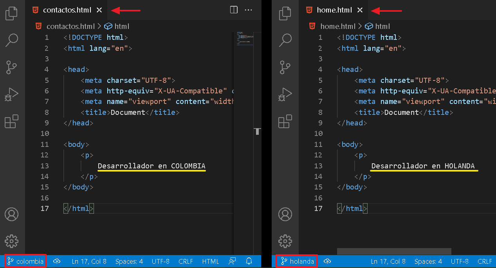
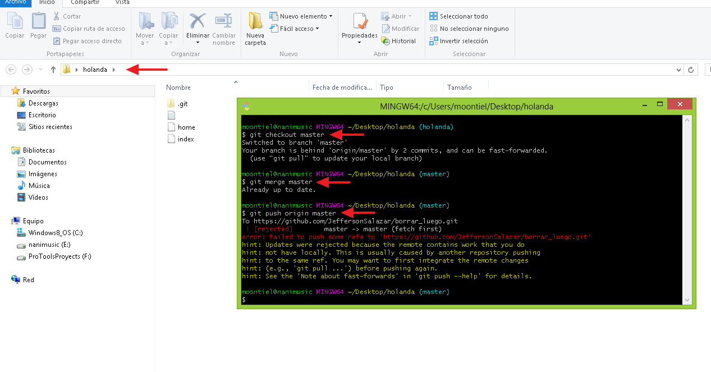
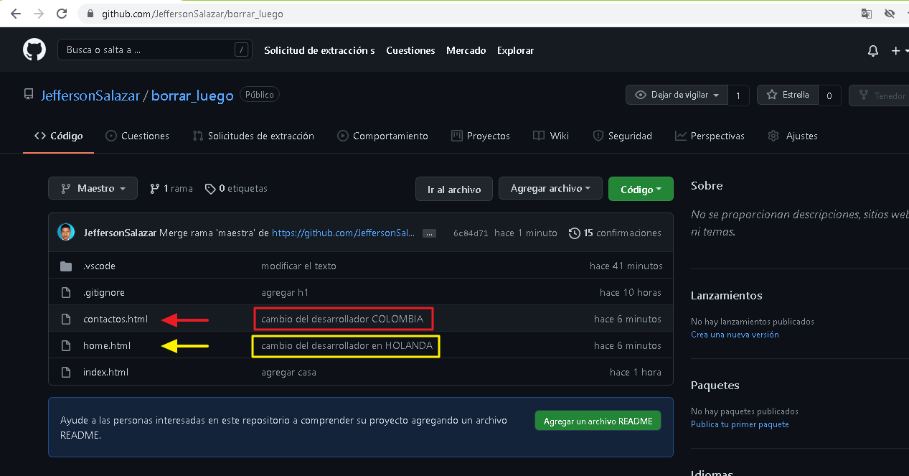

08. Conflictos
Estos conflictos suelen presentarse cuando queremos subir la version actual de nuestro proyecto en una version antigua o tambien cuando una misma linea es manipulada por varios desarrolladores.
01. Diferente desarrollador en diferente rama

02. Colombia sube cambios a rama master

03. Holanda intenta subir cambios a rama master

04. Holanda debe hacer un pull para subir sus cambios

05. Holanda finalmente sube sus cambios

06. Cambios reflejados de ambos desarrolladores

End Conflits